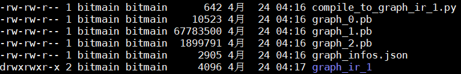

AutoSplit¶
AutoSplit only supports FP32 by now.
AutoSplit is a one-click automatical offline model splitting and compiling tool. For a model that can not be totally deployed on TPU, AutoSplit automatically divide it into several sub-models, and call the BMCompiler to convert some of the sub-models into bmodel, such as the Fasterrcnn below.

Users don’t need to worry about the splitting and compilation process. Generated sub-models could be used by the AutoRunner. The AutoSplit source codes are located in the “module/auto_split/” directory and currently supports tensorflow/mxnet. We provide two functions in “auto_deploy.api”, which are:
- split：
Automatically split the model that needs to be deployed into several submodels. And Save the submodels to the specified directory and save the relevant parameters to the “graph_infos.json” file in the directory.
- convert：
Parse the “graph_infos.json” file in the specified directory, and compile all the models in the directory that can be deployed on the TPU into bmodel.
graph_infos.json¶
AutoDeploy can automatically split a model into multiple submodels. So we defined a way to save the submodel after splitting. The figure above shows the submodels generated by splitting the model of “ssd_mobilenet_v2_coco_2018_03_29” in the tensorflow detection model zoo. (http://download.tensorflow.org/models/object_detection/ssd_mobilenet_v2_coco_2018_03_29.tar.gz)
“graph_0.pb”, “graph_1.pb”, and “graph_2.pb” in the figure are three submodels generated after splitting, which are topologically ordered. That is to say, given the input, the three sub-models are executed sequentially. The output is consistent with the original unsplitted model.
The “compile_to_graph_ir_1.py” script in the figure compiles “graph_1.pb” into bmodel and saves it in “graph_ir_1/” by calling BMCompiler(bmnett).
The graph_infos.json file contains information about the submodels, which are:
- graphs：
A list in which each element contains information of a submodel of “inputs”, “outputs”, “running device (cpu or tpu)”, “model path information (model_info)”. If the running device is tpu, it will also contain the path where the bmodel is located (context_dir).
- tensors：
Contains information on the input and output tensors of all submodels. These tensors are divided into three categories: “input”, “output”, and “intermediate”, Where “input” and “output” indicate that the tensor is the input and output of the original model, and “intermediate” indicates that the tensor is the intermediate tensor produced after splitting.
- graph_num：
Number of submodels after splitting.
- platform：
The deep learning framework on which the original model is based, currently supports tensorflow and mxnet.
- dynamic：
Dynamic mode represents the shape of input tensor of the model is variable. if it is dynamic, then the size information in tensors is the largest size.
- layout：
The layout of the original model, NHWC or NCHW.
The following shows the contents of “graph_infos.json” in the figure above:
{ "graphs": [ { "outputs": [ "Preprocessor/map/TensorArrayStack/TensorArrayGatherV3:0", "Postprocessor/zeros_like_1:0", "Postprocessor/div_1:0", "Postprocessor/div:0", "Postprocessor/zeros_like:0" ], "model_info": { "model_path": "graph_0.pb" }, "inputs": [ "image_tensor:0" ], "device": "cpu" }, { "outputs": [ "Squeeze:0", "Postprocessor/convert_scores:0", "Postprocessor/Reshape_1:0" ], "model_info": { "model_path": "graph_1.pb" }, "inputs": [ "Preprocessor/map/TensorArrayStack/TensorArrayGatherV3:0" ], "device": "tpu", "context_dir": "graph_ir_1" }, { "outputs": [ "detection_boxes:0", "num_detections:0", "detection_classes:0", "detection_scores:0" ], "model_info": { "model_path": "graph_2.pb" }, "inputs": [ "Postprocessor/div:0", "Squeeze:0", "Postprocessor/convert_scores:0", "Postprocessor/zeros_like_1:0", "Postprocessor/zeros_like:0", "Postprocessor/div_1:0", "Postprocessor/Reshape_1:0" ], "device": "cpu" } ], "tensors": { "Postprocessor/div:0": { "shape": [ 1 ], "attr": "intermediate" }, "Squeeze:0": { "shape": [ 1, 1917, 4 ], "attr": "intermediate" }, "Postprocessor/convert_scores:0": { "shape": [ 1, 1917, 91 ], "attr": "intermediate" }, "Postprocessor/zeros_like_1:0": { "shape": [ 1 ], "attr": "intermediate" }, "num_detections:0": { "shape": [ 1 ], "attr": "output" }, "Postprocessor/zeros_like:0": { "shape": [ 1 ], "attr": "intermediate" }, "detection_classes:0": { "shape": [ 1, 100 ], "attr": "output" }, "detection_boxes:0": { "shape": [ 1, 100, 4 ], "attr": "output" }, "Postprocessor/div_1:0": { "shape": [ 1 ], "attr": "intermediate" }, "detection_scores:0": { "shape": [ 1, 100 ], "attr": "output" }, "Preprocessor/map/TensorArrayStack/TensorArrayGatherV3:0": { "shape": [ 1, 300, 300, 3 ], "attr": "intermediate" }, "image_tensor:0": { "shape": [ 1, 500, 500, 3 ], "attr": "input" }, "Postprocessor/Reshape_1:0": { "shape": [ 1917, 4 ], "attr": "intermediate" } }, "graph_num": 3, "platform": "tensorflow", "dynamic": false, "layout": "NHWC" }
split¶
This function automatically splits the deep learning model that cannot be fully deployed on the TPU into several submodels. The main function is implemented by the Splitter class, and we defined the process of model splitting in the base class Splitter. Any subclass can call the convert_and_split function to complete model splitting, after implementing a series of virtual functions (such as determining if an op is a supported: is_op_support). The algorithm for model splitting is shared by each subclass and is implemented in the auto_deploy.common.graph module.
Description of split function is as follows. If you want to know the details of the model splitting, or if you need to implement a new Splitter. You can refer to the module: auto_deploy.common.base_splitter, auto_deploy.common.graph, auto_deploy.splitter.
@exception_wrapper(message="Met an Error when split model.") def split(platform, input_tensors, save_dir, graph_path, \ params_path=None, outputs=None, dynamic=False, layout='NCHW'): """ Split the raw model into several submodels. Args: platform: Platform that trained the model. Options: tensorflow, mxnet, pytorch, caffe input_tensors: A dict contains the information of input tensors. Format: {input_name: numpy.ndarray} save_dir: Path of directory to save submodels and splitting information. graph_path: Path to the graph description file of the model. params_path: Path to the parameters file of the model. Default None. outputs: A list contains the output tensor names. Default None. dynamic: True means input tensor shapes may change. Default False. layout: Layout of tensor. Default 'NCHW'. Returns: None. """
convert¶
This function compiles the model that can be run on the TPU into the bmodel in the splitted submodels, based on the device in each graph in the “graph_infos.json” file. If device is tpu, then the BMCompiler in the corresponding deep learning framework is called to compile the submodel. The function is implemented by the Compiler class, and each subclass needs to encapsulate the BMCompiler corresponding to the deep learning framework.
Description of convert fucntion is as follows. For details, refer to modules: auto_deploy.common.base_compiler and auto_deploy.compiler.
@exception_wrapper(message="Met an Error when compile model.") def convert(folder, optimize=None, compare=False, target='BM1682'): """ Compile all the subgraphs which can deploy on sophon. Args: folder: path that contains splitted models, 'graph_infos.json' must be under this folder Format of 'graph_infos.json': { "graph_num": graph_numbmer, "platform": "mxnet" "layout": "NCHW" "dynamic": False "graphs": [ { "device": "cpu", "inputs": list of input tensor names, "outputs": list of output tensor names, "model_info": { "json": json_file_path, "params": params_file_path } } ] "tensors": [ { "name": name, "shape": list for shape, "attr": "input" or "output" or "intermediate" } ] } optimize: optimizing mode, parameter of bmnet compiler. compare: if compare with cpu results when compiling. target: 'BM1682' or 'BM1684'(future). Returns: None. """